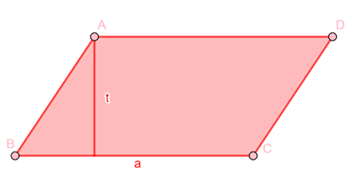

Jajargenjang adalah segiempat dengan sisi-sisi yang berhadapan sejajar dan sama panjang serta sudut-sudut yang berhadapan sama. jajargenjang dapat dibentuk dari gabungan sebuah segitiga dan bayanganya setengah putaran dengan pusat titik tengah salah satu sisinya.

Gambar 13 (Jajar Genjang)
Sifat-sifat jajargenjang adalah sebagai berikut:
a) Dua pasang sisinya sama panjang dan sejajar (DC = AB, AD = BC).
b) Mempunyai dua sudut lancip ( ∠A dan ∠C) dan dua sudut tumpul (∠ B dan ∠ D)
c) Memiliki 4 sisi dan 4 titik sudut.
d) Memiliki 2 pasang sisi yang sejajar dan sama panjang
e) Memiliki 2 sudut tumpul dan 2 sudut lancip
f) Sudut yang berhadapan sama besar
g) Diagonalnya tidak sama panjang
h) Tidak memiliki simetri lipat
i) Memiliki simetri putar tingkat 2
Rumus Jajar Genjang
L = luas, a = alas, t = tinggi
Tabel 3 (Rumus Jajar Genjang)

Ringkasan
Jajargenjang adalah segiempat dengan sisi-sisi yang berhadapan sejajar dan sama panjang serta sudut-sudut yang berhadapan sama. Dengan rumus:
 ,
,
Memiliki beberapa sifat yaitu: Sisi-sisi yang berhadapan sama panjang dan sejajar; Sudut-sudut yang berhadapan sama besar; Jumlah pasangan sudut yang saling berdekatan adalah 180°; Diagonal-diagonalnya saling membagi sama panjang.